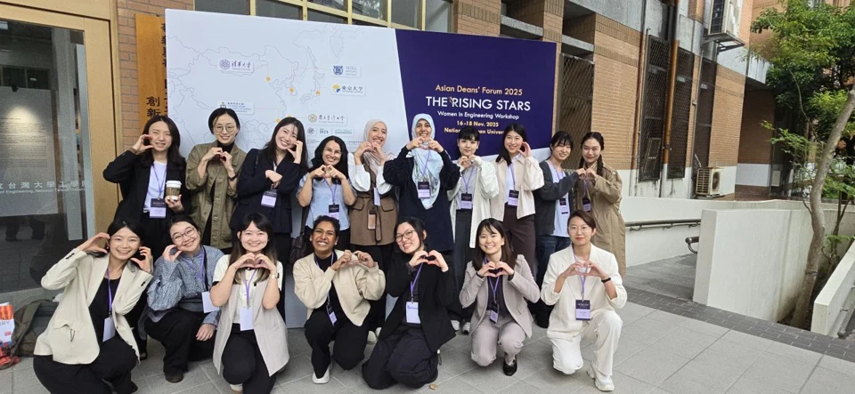
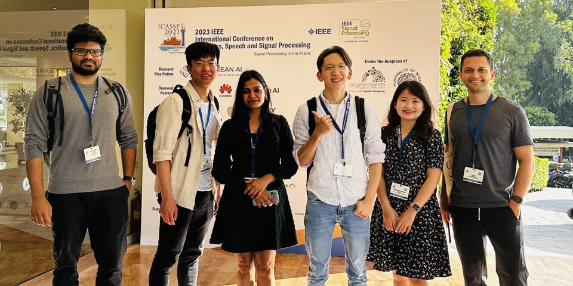
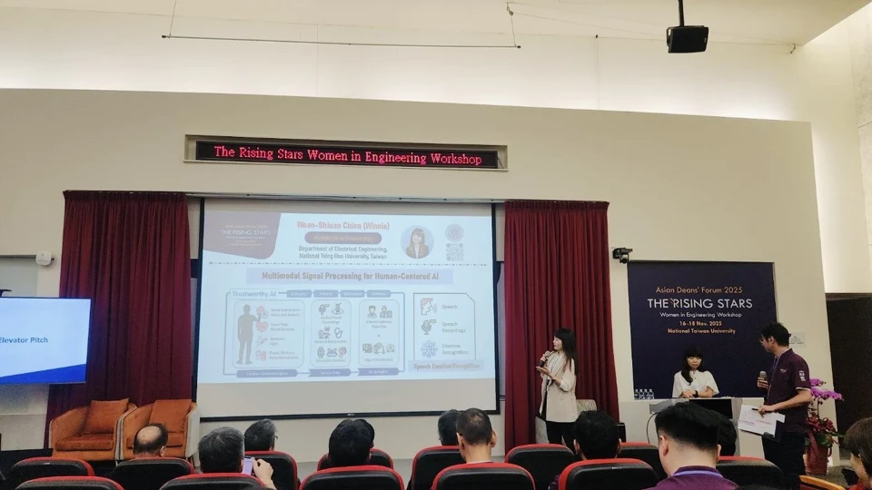
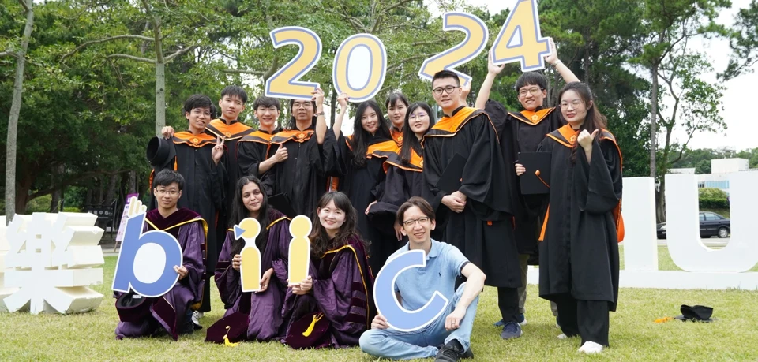
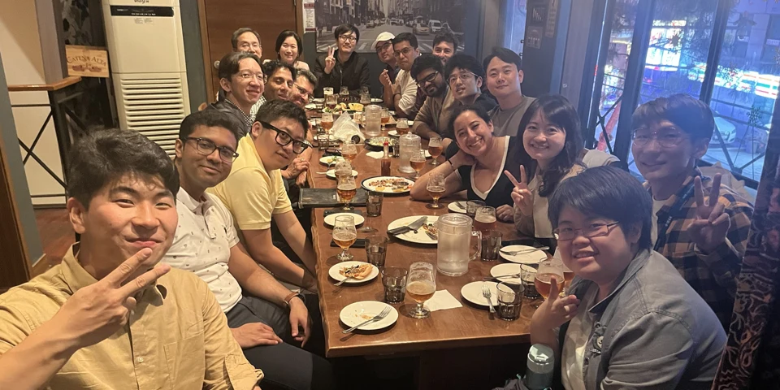
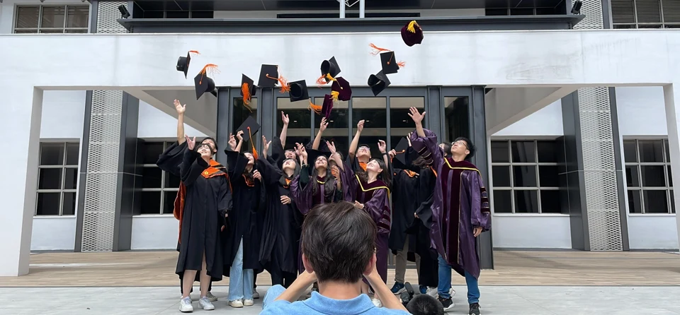
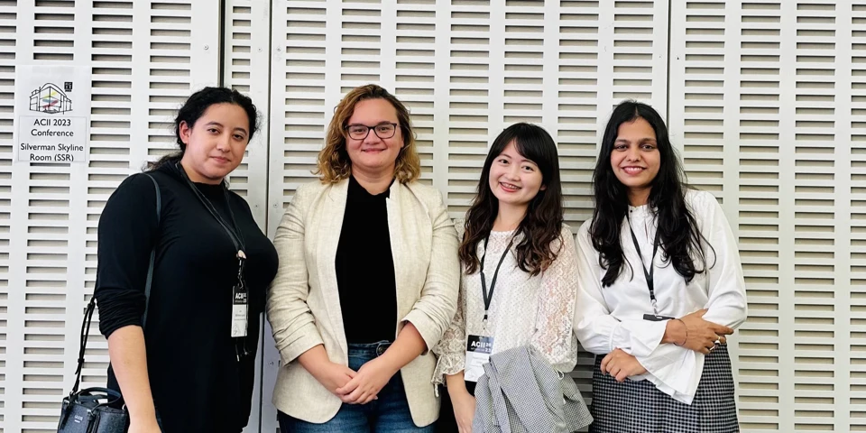

Woan-Shiuan Chien

Winnie 簡婉軒
Assistant Professor · Department of Electronics and Electrical Engineering
National Yang Ming Chiao Tung University (NYCU)
Academic Moments














Biography
I am an Assistant Professor at the Department of Electronics and Electrical Engineering of National Yang Ming Chiao Tung University (NYCU), starting from Feb. 2026. I am the director of Social Lab (人本訊號運算實驗室). I received my Ph.D. degree in Electrical Engineering from National Tsing Hua University (NTHU) in 2025, under supervision of Prof. Chi-Chun (Jeremy) Lee in the BIIC Lab.
My research brings together human-centered AI, affective computing, and multimodal signal processing to understand human emotion, behavior, and interaction through speech, physiological signals, and other behavioral modalities. I aim to develop trustworthy and inclusive AI systems that can support real-world applications in human interaction, healthcare, and well-being. I am an IEEE member and a member of ACM and ISCA.
I am the recipient of the 2025 Tsing Hua Postdoctoral Research Fellow (國立清華大學：114年清華博士後研究學者), a shortlisted participant of The Rising Stars Women in Engineering Workshop (2025), IEEE Taipei Section Best Doctoral Dissertation Award (2025), NSTC Outstanding Doctoral Students Fellowship (2022-2023) (國科會培育優秀博士生獎學金), Google Conference Scholarships (APAC) (2024, 2023), Elite-Well Doctoral Scholarship (2025), NTHU International Visiting Scholarship (2024, 2023), as well as 12 conference travel grants (including support from IEEE SPS, IEEE EMBS, AAAC, ACLCLP, NSTC, NTHU, etc.).
- Loading news…
Prospective Students
I welcome undergraduate, Master's, and Ph.D. students interested in multimodal signal processing, affective computing, human-centered analytics, data science, and trustworthy AI. Our research applications include healthcare, LLM reasoning, and speech emotion recognition.
If you are interested in joining Social Lab, please send me your CV and a short note about your research interests. To connect with current lab members and learn more about their research, please fill out the interest form. You can find Social Lab in room ED525.
If you are applying for a Master's degree, please apply to the Institute of Electrical and Computer Engineering (電機工程研究所乙組), the Institute of Communications Engineering (電信工程研究所甲組), or the Graduate Degree Program of Artificial Intelligence (人工智慧碩士學位學程甲組) at NYCU.
Once you receive an admission offer, please feel free to get in touch. I'd love to hear about your research interests and explore how we might work together.
If you are an international student interested in pursuing a Master's or Ph.D. degree at NYCU, please apply through the EECS International Graduate Program (電機資訊國際學位學程). For further information on admission requirements and application procedures, please also refer to the Office of International Affairs.